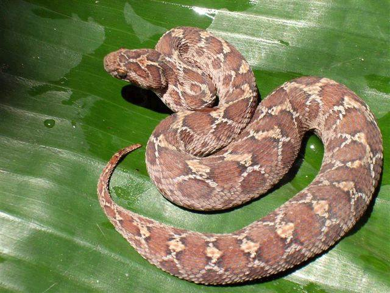

How will you identify me?

-
Body short, robust and stout.
-
Highly keeled pointed scales of dry appearance found in all over the dorsal body.
-
ody color ranges from light to dark brown, gray, brick red or reddish-brown. Light color
spots of light yellow or very light brown margined by dark color found in whole dorsal surface
-
Head triangular with small shaped keeled scale; clearly broader than neck.